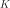
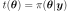

The Metropolis-Hastings Algorithm¶
 -algebra
-algebra  on
on
 , a Markov chain is a process
such that
, a Markov chain is a process
such thatAn example is the random walk for which
where the steps
 are independent and identically distributed.
are independent and identically distributed.
 is
a mapping
is
a mapping ![K: (\Omega, \cA) \rightarrow [0, 1]](../../_images/math/9ab3e484664761c65a4baba917ad335a67a653a2.svg) such that
such that is measurable;
is measurable;- is a probability distribution on.
The kernel  has density  if
.
if
.
with
initial distribution  (that is
(that is  ):
): denotes the probability distribution of the Markov
Chain ;
denotes the probability distribution of the Markov
Chain ;denotes the probability distribution of
 (
( );
); denotes the mapping defined by
for all
denotes the mapping defined by
for all
 .
.
is said to converge in total variation distance towards
the distribution  if
ifThen the notation used here is .
be a (target)
distribution on , then a transition kernel
is said to be:- -invariant if
 ;
; - -irreducible if,
 such
that ,
holds.
such
that ,
holds.
Markov Chain Monte-Carlo techniques allows to sample and integrate
according to a distribution which is only known up to a
multiplicative constant. This situation is common in Bayesian statistics
where the “target” distribution, the posterior one
, is proportional
to the product of prior and likelihood: see equation (1).
In particular, given a “target” distribution and a
-irreducible kernel transition  , the
Metropolis-Hastings algorithm produces a Markov chain
of distribution with the
following properties:
, the
Metropolis-Hastings algorithm produces a Markov chain
of distribution with the
following properties:
the transition kernel of the Markov chain is
-invariant;;
the Markov chain satisfies the ergodic theorem: let be a real-valued function such that , then, whatever the initial distribution
is:![\begin{aligned}
\displaystyle\frac{1}{n} \sum_{k=1}^n \: \phi(X_k) \tendto{k}{+\infty} \mathbb{E}_{X\sim{}t}\left[ |\phi(X)| \right]
\mbox{ almost surely}.
\end{aligned}](../../_images/math/ef0cc8fb66571bdb48d10e038efd75810c2a13ca.svg)
In that sense, simulating amounts to
sampling according to and can be used to integrate relatively
to the probability measure . Let us remark that the ergodic
theorem implies that
almost surely.
By abusing the notation, represents, in the remainder of
this section, a function of  which is proportional to the PDF
of the target distribution . Given a transition kernel
of density
which is proportional to the PDF
of the target distribution . Given a transition kernel
of density  , the scheme of the Metropolis-Hastings
algorithm is the following (lower case letters are used hereafter for
both random variables and realizations as usual in the Bayesian
literature):
, the scheme of the Metropolis-Hastings
algorithm is the following (lower case letters are used hereafter for
both random variables and realizations as usual in the Bayesian
literature):
- Draw and set
 .
. - Draw a candidate for
 according to the given transition
kernel : .
according to the given transition
kernel : . - Compute the ratio .
- Draw
![u \sim \cU([0, 1])](../../_images/math/8c715686af9ea283da606bf0f7124a075667fcf8.svg) ; if then set
; if then set
 , otherwise set
, otherwise set  .
. - Set
 and go back to 1).
and go back to 1).
Of course, if is replaced by a different function of
which is proportional to it, the algorithm keeps unchanged, since
only takes part in the latter in the ratio
. Moreover, if proposes
some candidates in a uniform manner (constant density ), the
candidate  is accepted according to a ratio
is accepted according to a ratio
 which reduces to the previous “natural” ratio
of PDF. The introduction of
in the ratio prevents from the bias of a
non-uniform proposition of candidates which would favor some areas of
.
which reduces to the previous “natural” ratio
of PDF. The introduction of
in the ratio prevents from the bias of a
non-uniform proposition of candidates which would favor some areas of
.
The -invariance is ensured by the symmetry of the expression of
(-reversibility).
In practice, is specified as a random walk
( such that ) or as a
independent sampling ( such that
such that
 ), or as a mixture of random walk and
independent sampling.
), or as a mixture of random walk and
independent sampling.
is the
-irreducibility. Moreover, for efficient convergence,
has to be chosen so as to explore quickly the whole support
of without conducting to a too small acceptance ratio (the
ratio of accepted candidates ). It is usually
recommended that this latter ratio is about  but such a
ratio is neither a warranty of efficiency, nor a substitute to a
convergence diagnosis.
but such a
ratio is neither a warranty of efficiency, nor a substitute to a
convergence diagnosis.API:
Examples:
References:
- Robert, C.P. and Casella, G. (2004). Monte Carlo Statistical Methods (Second Edition), Springer.
- Meyn, S. and Tweedie R.L. (2009). Markov Chains ans Stochastic Stability (Second Edition), Cambridge University Press.